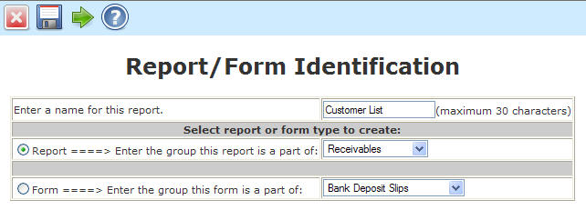
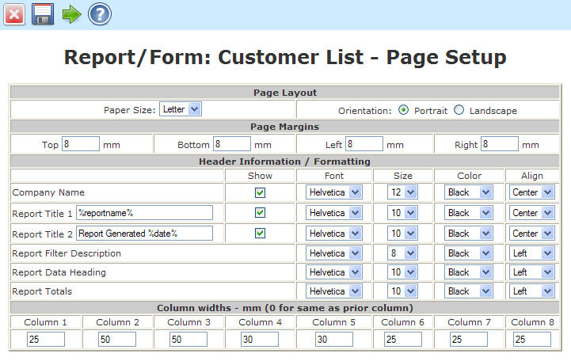
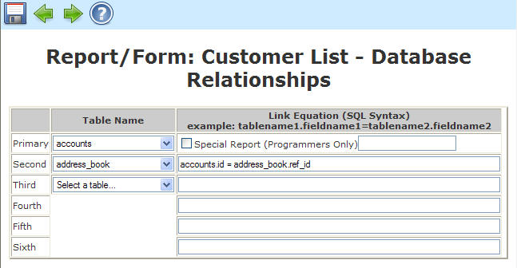
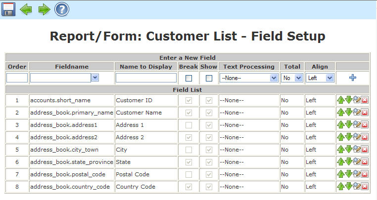
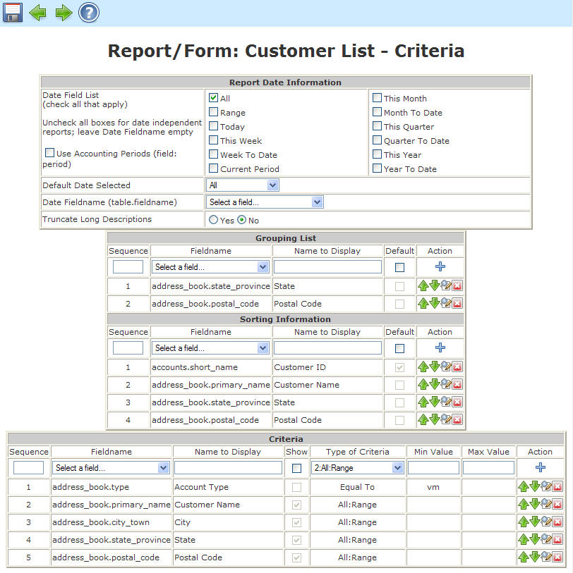
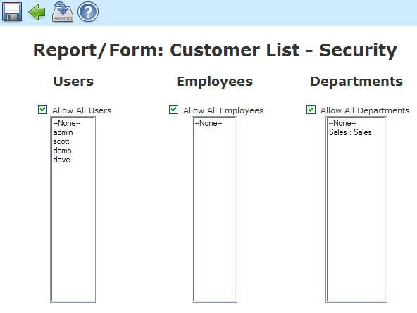

Revision History
Introduction
How Do I Create a New Report?
The report builder tool provides administrators with the ability to create, copy, edit, delete, import and export database driven reports and forms. Pre-defined reports are stored in the language directory labeled specified for the given language. After installing the plug-in, there may be several standard reports and forms installed. More reports or forms can be added by importing them from either the host servers reports directory or uploading them directly from the browser. Standard reports can be viewed and customized through the Report Viewer. Forms may only be edited through Report builder. The Report Viewer manual covers the output procedures necessary for exporting or viewing reports created with the report builder.
NOTE: DETAILED UNDERSTANDING OF THE DATABASES AND FIELDS IS REQUIRED TO USE REPORT BUILDER! FAILURE TO DO SO WILL RESULT IN ERRORS OR NON-FUNCTIONAL REPORTS AND FORMS.
There are five steps to building a report. They are:
The best way to demonstrate how to build a report would be to show an example. We'll build a report called: Invoice Report. First we'll need to access the report builder. It is found under the Setup menu under the General category titled Report Builder Tool. Once there press the Add New button.
For our report, enter Invoice Report into the Enter a name text box. Also, we need to specify that it is a report by selecting the Report radio button. We now need to place this report under the proper category so select Receivables from the drop down menu for the group this report is a part of.

Press Continue when all information has been entered.
IMPORTANT: At this time a record will be added to the reports table and will appear in the list of available reports. Users can choose this report to generate but the result will be a 'No data in this report' warning. The report should be deleted if the report builder process is not completed for a given report.
The next screen allows us to alter some of the default settings for the layout of the report. Most fields are self explanatory but there are a few notes to remember.
Page layout: You should set the default paper size to what you really want it to be. It cannot be changed when viewing standard reports. You may return here to make further changes by editing the report after you finish building the report testing the output.
Column Width: If you have a pretty good idea of how many columns you want your report to be and the width, you can enter them here. If you leave the defaults for now and finish your report you may go back and change the column widths after you test you finished product at a later time.
Titles: Data will appear as it is typed but there are system generated tags to automate the report. This list is current as of this writing but may change as more tags are added.
Tag |
Description |
| %date% | Inserts the current date into the title in the place the tag appears within the title string. |
| %reportname% | Inserts the report name stored in the database. |
NOTE: Margin and column widths are in millimeters, font sizes are in points.

After all information has been entered, press Continue to enter the database information.
This form allows us to specify the tables and linked tables that are used to build the query. These fields generate what will become the second part of the query, "FROM table1 INNER JOIN table2 ON table2linkequation INNER JOIN table3 ON etc".
NOTE: IMPORTANT: KNOWLEDGE OF THE DATABASE TABLES AND STRUCTURE IS REQUIRED.
Enter the data in the boxes as shown below. Only one row of data may be entered at a time in sequence. After each table/Link Equation row has been entered, press the Update button to validate the table and commit the link equation. The form will reload with data just entered and will then allow the next Table/Link Equation to be entered. The fields are case sensitive.
Text Box Name |
Data to Enter |
| Table Name - Primary | salesorders |
| Table Name - Second | salesorderdetails |
| Link Equation - Second | salesorders.orderno = salesorderdetails.orderno |
| Table Name - Third | debtorsmaster |
| Link Equation - Third | salesorders.debtorno = debtorsmaster.debtorno |
| Table Name - Fourth | custbranch |
| Link Equation - Fourth | salesorders.branchcode = custbranch.branchcode |
NOTE: After the data has been entered, the tool will validate the data by attempting to retrieve a single row from the query. If a single row cannot be accessed from the database, you cannot progress past this point.
NOTE: If you get stuck here, remember that the report exists in the standard reports list and should be deleted to prevent users from running the report.

After all information has been entered, press Continue to enter the possible fields to query.
This form will add the allowed fields to a query build list. These fields generate will become the first part of the query, "SELECT field list here". At least one field needs to be entered to make a valid report. Up to the total number of fields in the linked databases provided in step 3 are allowed. In practice, however, a smaller list usually works the best. Each field has it's own attributes. They can be re-sequenced, force a column break, set to show and marked to track a running total. Only the fields added here will appear in the report viewer list for selection.
PRACTICAL NOTE: It's a good idea to pre-order the fields in a logical order in the way you want to the data to appear. Also, selecting the fields to show combined with the column breaks should result in a default report of eight columns or less so they can be displayed directly from the standard report without modifications.
Order: The order determines the sequence of the generation of the field list. If an order number is entered that already exists, it will be inserted into the list in the order specified and the remaining fields will be bumped down one position. If the order number is left out, it will append the new field to the end of the list. Order numbers begin with 1.
Fieldname: This text field needs to match the exact table and fieldname in the database. The fieldname is entered in the form 'table.fieldname' to provide absolute identification of the field to be retrieved. A test to retrieve a single line form the database with the fieldname and display description will be performed to validate the input. If the fieldname is incorrect or the display description is blank, an error will result.
Name to Display: The description can be any English (or other language) description. This is the ID assigned to the fieldname. It will appear on the report heading and links directly to the table.fieldname entry. Special characters are allowed but not recommended.
Break: This field specifies whether there should be a column break after this entry is displayed. The field can only be altered in the Report Viewer for custom reports so it's best to get it right in the standard report to generate the desired output. It is a good idea to group certain fields in the same column. For example, addresses typically read better if they appear in a block versus spread out over several columns. Also, the report is limited to eight columns to display. Most standard reports will list more than eight fields and using column breaks will help organize the output.
Show: Identifies the fields to display. Only fields that are checked to show will appear in the report. It is a good practice to show the fields that you want to appear in the standard report but not necessarily all fields. The user can decide what pieces of data they want and alter this field only in custom reports. If no fields are identified to show, the report viewer will generate a warning message 'No data to display'.
Total: Specifies if a running total should be kept. Can be set for any numeric field. If grouping is set, the report viewer will also track subtotals by the group selected as well as the total for all field retrieved in the report.
Let's add some fields to our report. We'll use an abbreviated list to show the general idea. If more fields are needed or need to be edited, the report may be edited and fields added or deleted as necessary. Enter the fields as shown in the table below.
Sequence |
Fieldname |
Name to Display |
Break |
Show |
Total |
1 |
salesorders.orderno | Order Number | No |
Yes |
No |
2 |
salesorders.orddate | Order Date | No |
Yes |
No |
3 |
salesorders.branchcode | Branch ID | Yes |
Yes |
No |
4 |
salesorders.customerref | Customer Reference | No |
Yes |
No |
5 |
salesorders.deliverto | Deliver To Name | Yes |
Yes |
No |
6 |
salesorderdetails.quantity | Quantity | No |
Yes |
Yes |
7 |
salesorderdetails.stkcode | Part Number | No |
Yes |
No |
8 |
salesorderdetails.unitprice | Unit Price | Yes |
Yes |
Yes |
9 |
debtorsmaster.name | Customer Name | No |
Yes |
No |
10 |
debtorsmaster.address1 | Customer Address 1 | No |
No |
No |
11 |
debtorsmaster.address2 | Customer Address 2 | Yes |
No |
No |
12 |
debtorsmaster.address3 | City | No |
No |
No |
13 |
debtorsmaster.address4 | State | No |
No |
No |
14 |
debtorsmaster.address5 | Postal Code | No |
No |
No |
15 |
debtorsmaster.address6 | Country | Yes |
No |
No |
16 |
custbranch.deliverydate | Delivery Date | No |
Yes |
No |
17 |
custbranch.custbranchcode | Branch ID | No |
No |
No |
If you make an error, the buttons on the right of each row entered allow you to edit, re-sequence, or delete a row. Your form should like something like this:

After all information has been entered, press Continue to enter the filter criteria.
This form builds the options for date selection, grouping, sorting, and filtering for the standard report. These fields generate what will become the where of the query, "WHERE criteria1 AND criteria 2 AND etc ORDER BY grouping, sorting". Here's how each field works:
Date: If your report has a date field that is displaying, this is where you will specify the type of data choices available. Many are just quick selections to standard periods of time. The two most generic, ALL and RANGE allow the user to quickly view every entry in the database or specify the particular date range they are interested in. For all date selections (except ALL), the table name and fieldname 'table.fieldname' must be entered into the Date Fieldname text box or an sql error will result. The fieldname will be tested with the selected tables to validate the input. A default date can be chosen hare as well. For example, If a standard report named Today's Sales is being generated, you may still want to allow the user to select a date range but you want the date to first come up with Today as the default. In this case, you would select as many date choices as you wish but upon entry to the report, Today will be the default.
NOTE: If your report doesn't have any date fields, or doesn't depend on date information, either de-select all the check boxes in which case the date options will not be displayed in the report viewer or just check the ALL box to show the date option with only a single choice available.
Truncate Long Descriptions: This is handy for summary reports or when a field is long and you want to avoid column wraps of the text. Checking this box truncates any field that will exceed the column width to keep it to one line. This feature also truncates the column headings.
Grouping Fields:
Sorting Fields: Grouping Fields and Sorting Fields are similar. The main
difference being the grouping is specified earlier in the ORDER BY portion of
the sql string and subtotaling is calculated and displayed on the report. If no
groupings are specified, the option will not show in the Report Viewer criteria
selection form.
Default: Checking the default box will pre-select a particular group and/or sort field. These choices may be altered in both the standard reports and the custom reports but saves time if your target report is designed to have a specific grouping or sorting.
Filter Criteria: The filter criteria allows for user options to further refine their search. There are no limit to the number of options but usually 3-4 work the best. The type of criteria must make sense relative to the field. If the field is a text field, the all:range criteria work best. For yes/no fields, the all:yes:no, printed:unprinted, etc work the best.
NOTE: The Grouping Display Fieldname must match exactly the Fieldname in the Field List for the Group Subtotal to function properly. The report fields will still be grouped properly but the subtotals and group breaks will not be displayed.
Let's fill in our report with the following data:
1. Check all the date boxes except the 'to-date' boxes. This will give the user
more than enough choices.
2. Enter salesorders.orddate in the Date Fieldname text box.
3. Check No in Truncate Long Descriptions. We can change it later if necessary.
4. Enter the Grouping as follows:
Sequence |
Fieldname |
Display Description |
Default |
1 |
salesorders.orddate | Order Date | No |
2 |
salesorders.orderno | Order Number | No |
5. Enter the Sorting as follows:
Sequence |
Fieldname |
Display Description |
Default |
1 |
debtorsmaster.name | Customer Name | Yes |
2 |
salesorders.orderno | Order Number | No |
6. Enter the Field Criteria as follows:
Sequence |
Fieldname |
Display Description |
Type of Criteria |
1 |
salesorders.branchcode | Branch ID | All:Range |
2 |
salesorders.orderno | Order Number | All:Range |
3 |
salesorders.quotation | Quotation | All:Yes:No |
NOTE: Notice that we allow the user to filter based on salesorders.quotation even though the field is not listed in the Field List. The Report viewer will still use the field to filter the data even though you may not want the field to display. This is usually not a good idea in practice. The output report header will indicate that the filter criteria included quotation if Quotation: Yes or Quotation: No is selected to show that the report only contains filtered data.
The form should look something like this:

This form builds the allowed list for security. Here’s how each field works:
Users: Check the box to allow all user to access this report, or, select from your current user list. Zero or more selections are possible.
Employees: Check the box to allow all employees to access this report, or, select from your current employee list. Zero or more selections are possible.
Departments: Check the box to allow all departments to access this report, or, select from your current department list. Zero or more selections are possible.
NOTE: If any user, employee, or department is excluded, the report will not appear in the Tools->Reports listings.

That's it, click on Finish to exit the report builder and we're ready to see our result.